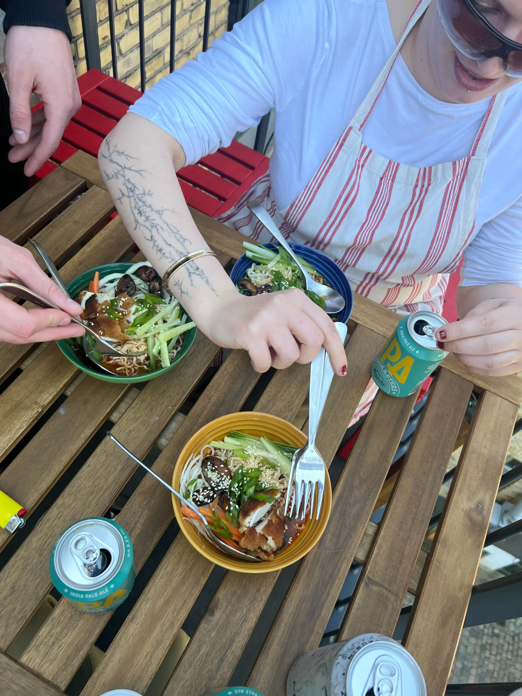
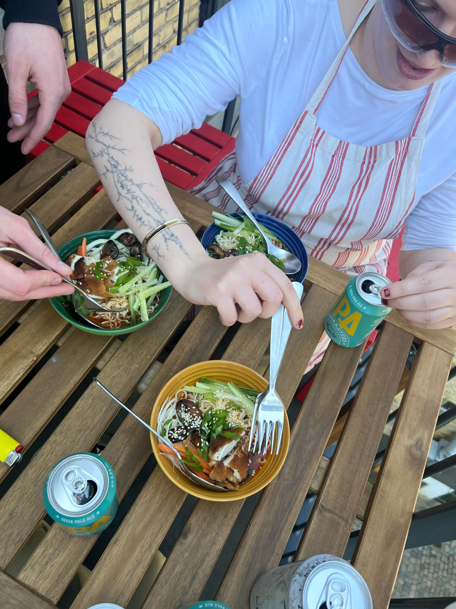

Livs Passion for mad
Liv's livret
I Livs køkken er ramen mere end bare en skål nudler - det er et kunstværk, der afspejler hendes
passion for madlavning
og hendes kærlighed til det asiatiske køkken. Hendes dybe fascination for saucen er lig med hendes
forkærlighed for
smagen af kål og andre vidunderlige ingredienser, som hendes mor altid inkluderede i deres måltider.
Når Liv skaber sin ramen, er det som om, hun tryller. Med en snert af denne, en smule af hinten og
en kærlig hånd,
blander hun smagene sammen til en symfoni af velsmag. Hendes passion for madlavning stråler igennem,
hver gang hun
sætter en skål foran en heldig gæst.
For Liv er mad mere end blot ernæring; det er en måde at udtrykke kreativitet, kærlighed og
forbindelse på. Hendes ramen
er et mesterværk, der bringer mennesker sammen omkring bordet og vækker deres smagsløg til live med
hvert eneste bid.
Liv i køkkenet
 
